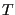
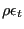

Next: Application of BC's Up: Three-Dimensional Navier-Stokes Calculations Previous: Smoothing the conservative variables Contents
Then, the physical variables are determined from the conservative ones in
con2phys.f and stored in vold(0..mi(2),*). The determination of the
temperature  